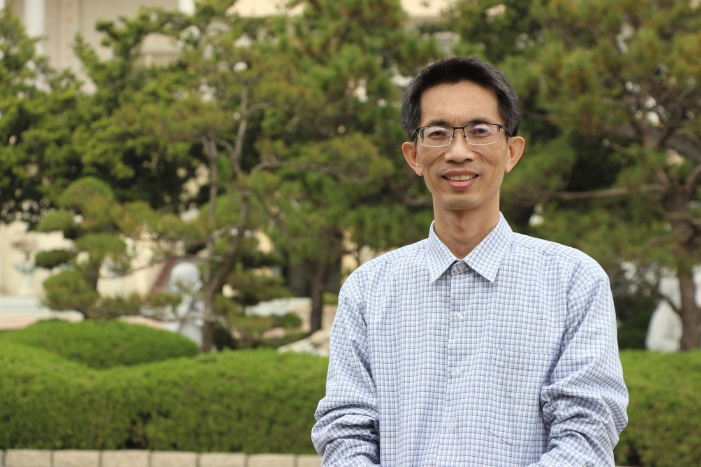
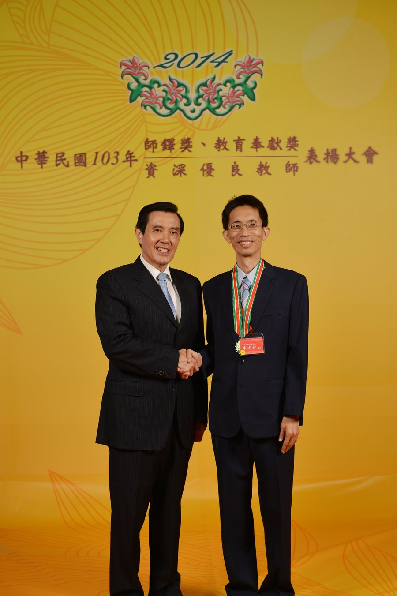
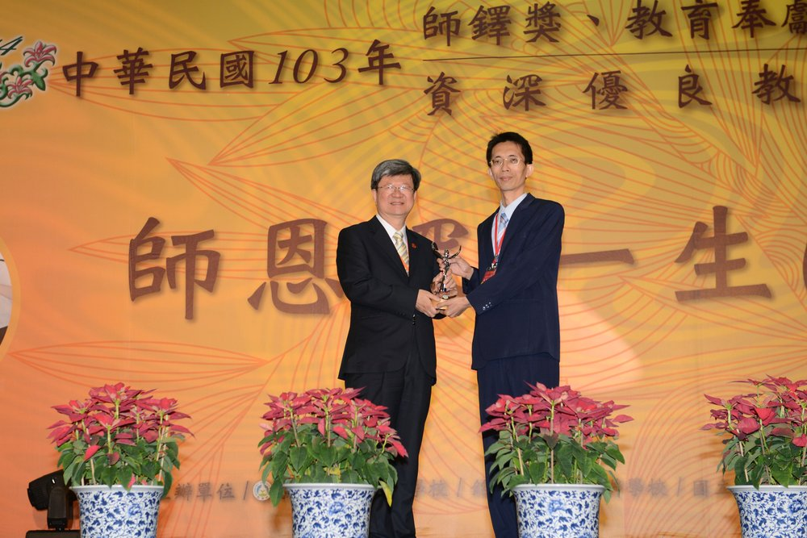
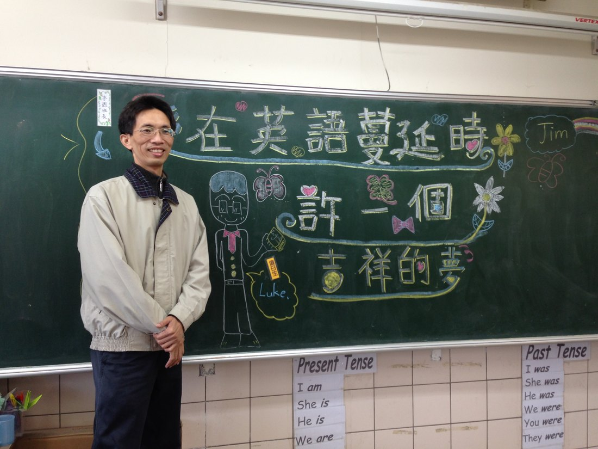

Leadership · Founder
Founder and executive director of My Culture Connect, and a 2014 recipient of Taiwan's national Education Dedication Award. He has brought free English education to children across rural Changhua since 2002.

His story
Since 2002, Luke Lin has offered free English classes in Zhutang Township, running them out of Minghang Temple to reach children across southern Changhua. He often says that being able to serve others, in his own small way, has made him happier than ever before.
He built a team of volunteers, filmed his own teaching videos, set up websites, and gathered the equipment to bring English into rural schools. He also looked overseas for help, connecting students with foreign teachers face to face over video so they could practice speaking with native and near-native speakers.
Milestones
2014 Education Dedication Award



A wish on the chalkboard
The line he chalked on the board reads, “When love spreads through English, make a hopeful wish” — a quiet play on his own name, Jixiang (吉祥), which means auspicious or hopeful.
It captures what he has spent more than two decades building: not just lessons, but confidence, opportunity, and a wider world that these children might otherwise never have known.
Beyond My Culture Connect